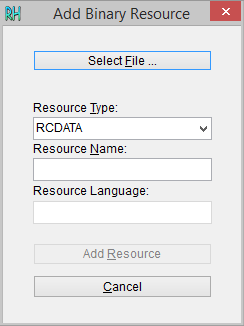

Редактирование стилей площадных заливок MapInfo
Необходимое вступление
Изначально эта статья задумывалась как логическое продолжение темы, затронутой в «Редактирование стилей линий MapInfo». Предполагалось, что таким образом будет сформирован цикл статей, посвящённых модернизации средств визуального оформления графических материалов в MapInfo Professional. Но, ещё на этапе подготовки, выяснилось, что на сайте «ГИС Лаборатории» опубликован текст аналогичной тематики «Создание собственных стилей площадных заливок в MapInfo». Чтобы не «плодить сущности», работа над статьёй была приостановлена.
К сожалению, упомянутый текст устарел сразу же, как только вышла MapInfo Professional версии 12.5х. Кроме того, в статье на GIS-Lab, безусловно, интересной и категорически рекомендуемой к прочтению, не были упомянуты некоторые важные аспекты. С учётом этих соображений, статья была дописана с небольшими изменениями. Некоторые парафразы в тексте, тем ни менее, неизбежны, что и вызвало необходимость написания этого вступления.
- Введение
- Заливки площадных объектов MapInfo
- Ресурсы программы
- Редакторы ресурсов
- Размещение файла ресурсов
- Содержание файла ресурсов
- Параметры образца заливки
- Приведение к масштабу
- Практические примеры
- Создание и редактирование изображения
- Создание образца заливки
- Изменение образца заливки
- Пример результатов редактирования
Введение
Как уже неоднократно утверждалось, средства визуального оформления графически материалов в MapInfo Professional до отвратительности скудны и неуважительно непригодны к реальному использованию. И, что ещё ужаснее для неофита, никаких штатных средств для исправления ситуации нет и не предвидится. Но, как известно, «нужда изощряет ум». При вдумчивом рассмотрении оказывается, что на каждое подобную проблему у пользователей MapInfo есть своё решение в виде «болта на 28 с левой резьбой». Модернизируется, причём без особых усилий, все средства оформления, пусть и при помощи разнообразных уловок.
О редактировании стилей линий говорилось в предыдущей статье, а сейчас речь пойдёт о редактировании заливок площадных объектов в MapInfo Professional.
Заливки площадных объектов MapInfo
Термин «заливка» применительно к площадным объектам в русскоязычной версии MapInfo Professional, как таковой, не используется. Вместо этого введён термин «штриховка» (?!), в чём можно убедиться, открыв диалог оформления площадного объекта:

Сложно понять, почему именно так переведён термин «Fill» (fiil (en) –> заливка) англоязычной версии (скриншот из версии MapInfo 5.5):
Как бы там ни было, разночтения локализаций программы не должно вводить в смущение, «говорим – партия, подразумеваем – Ленин», т.е. речь всё равно пойдет именно о заполнении контуров площадных объектов указанным рисунком по определённым правилам.
Именно «рисунком», кстати. Заливки в MapInfo никак не векторные, а представляют собой растровое изображение, тиражируемое по площади контура.
Ресурсы программы
Отдельного файла (каталога) для размещения образцов заливок, по подобию MAPINFOW.PEN или /CUSTSYMB, в MapInfo нет. Вместо этого используется загрузка изображений из файла ресурсов, некого мульти-файла, в который могут входить данные абсолютно любого типа, будь то строковые данные, изображения, или целые файлы. Скомпилированные ресурсы могут храниться в различных форматах. В случае Windows-программ это, наиболее вероятно, EXE-файлы или, как в настоящем случае, DLL(динамически подключаемая библиотека).
Редакторы ресурсов
Прежде чем начинать работу, необходимо учесть следующие моменты:
При разговоре о редактировании заливок MapInfo нельзя не упомянуть «Редактор заливок площадных объектов» от группы независимых разработчиков. Эта, во всех смыслах, замечательная программа предоставляет возможность оперативного редактирования заливок MapInfo, не отвлекая пользователя на ненужные ему технические аспекты. Недостаток, если можно так сказать, у неё ровно один – она, к сожалению, платная и поэтому обсуждаться в данной статье не будет. В общем же случае, для редактирования скомпилированных ресурсов (DLL, EXE) используются специальные программы – редакторы ресурсов. Их на рынке программного обеспечения довольно много, но в данной статье будет использоваться исключительно Resource Hacker. Программа Ангуса Джонсона (Angus Johnson) выгодно отличается от прочих полной бесплатностью и портабельностью при весьма развитой функциональности. Скачать программу можно как в виде инсталлятора, так и ZIP-архива. После распаковки программа готова к использованию:
{kind=link}
Необходимо сразу оговорить тот факт, что Resource Hacker не умеет редактировать хранимые в файле ресурсов изображения. Для изменения их необходимо предварительно извлечь из файла, сохранить на диске, отредактировать в стороннем редакторе и только потом загрузить изменённое изображение в ту же DLL.
Размещение файла ресурсов
Как говорилось уже, образцы заливок MapInfo хранятся в динамических библиотеках (DLL) в корневом каталоге программы. Имена этих библиотек менялись для каждой версии. Ниже приведена сводная ведомость библиотек с ресурсами образцов заливок для разных версий MapInfo:
| Версия MapInfo | Файл ресурсов |
| 5.0 | mires501.dll |
| 5.5 | MIRES550.DLL |
| 6.5 | mires650.dll |
| 7.0 | MIRES700.DLL |
| 7.5 | MIRES750.DLL |
| 8.0 | mires800.dll |
| 8.5 | mires850.dll |
| 9.0 | MIRES900.dll |
| 9.5 | mires950.dll |
| 10.0 | mires.dll |
| 10.5 | mires.dll |
| 11.0 | micore.dll |
| 11.5 | micore.dll |
| 12.0 | micore.dll |
| 12.5 | MIAuxResources.dll |
Т.е., как видно из приведённой таблицы, с версии 5.0 до версии 10.0 имена библиотеки ресурсов имели вид MIRES (MapInfo RESource) + номер версии. В версии 10 имена лишились цифрового постфикса. Для версий 11.х и 12.0 библиотека имеет имя micore (mapinfo core). На уровне версии 12.5 (последней на текущий момент) библиотека претерпела значительные изменения и получила имя MIAuxResources.
Содержание файла ресурсов
Файл ресурсов может содержать любые данные. Они структурированы по типам и названия этих типов строго регламентированы:
{kind=link}
Как видно из приведённых скриншотов, состав ресурсов изменялся со временем. Так, на нижних версиях DLL представляла банальную «свалку» всех мыслимых ресурсов программы: иконки панели инструментов, клавиши-акселераторы, диалоги программы, курсоры и прочее. На версиях выше исчезают диалоги и акселераторы, появляется новый тип для иконок панели инструментов, хотя и старые иконки остаются. И на этапе последней версии в DLL только 3 типа, причём два из них, по сути, служебные.
Но, из всего многообразия представленных типов, для редактирования образцов заливок интересен только раздел типа «Bitmap». Bitmap – это и есть растровое изображение, обычно в формате BMP.
Изображения в разделе Bitmap отсортированы по возрастающим номерам:
{kind=link}
Надо заметить, что и сам раздел Bitmap подвергался изменениям от версии к версии. На нижних версиях, помимо образцов заливки, в этот тип также были записаны иконки кнопок некоторых диалогов (местоположение подписи, вид диаграммы и пр.). Номера изображений с заливками при этом имели номер меньше 900, остальные же, соответственно, больше:

MIAuxResources .dll (файл ресурсов последней версии программы) Bitmap содержит уже исключительно образцы заливок. Т.е. очевидно, что происходит постепенное упорядочивание внутренней структуры программы, что, безусловно, обнадёживает.
Кроме того, надо упомянуть, что количество образцов заливок также изменялось со временем:
| Версия MapInfo | Количество образцов заливок |
| 5.0 | 61 |
| 5.5 | 61 |
| 6.5 | 61 |
| 7.0 | 61 |
| 7.5 | 165 |
| 8.0 | 165 |
| 8.5 | 165 |
| 9.0 | 165 |
| 9.5 | 165 |
| 10.0 | 165 |
| 10.5 | 165 |
| 11.0 | 165 |
| 11.5 | 176 |
| 12.0 | 183 |
| 12.5 | 183 |
Сравним – заливка MapInfo 5.5 vs заливка MapInfo 12.5:
Параметры образца заливки
Сами же образцы заливки обладает рядом характеристик, которые необходимо учитывать при работе с ними.
Формат изображения
Допустимы любые растровые изображения в формате BMP и только в BMP. Попытка использовать изображение иного формата приведет к загрузке последнего в раздел, отличный от Bitmap. В лучшем случае. Или к ошибке структуры DLL – в худшем.
Размер изображения
На нижних версиях образцы были строго 8*8 пикселей (px). С повышением версии стали получать размеры 16×16 px, а впоследствии и 32×32 px. Экспериментально было установлено, что загружать можно изображения любого размера и любых пропорций. Они будут корректно отображаться в списке и на объекте, но большие изображения существенно замедляют их прорисовку.
Цвет изображения
Экспериментально было установлено, что можно использовать любые цвета при оформлении образцов заливок. Однако, необходимо учитывать, что маски цвета по умолчанию следующие: цвет подложки – белый, цвет узора – чёрный. При использовании отличных цветов не будет происходить смена цвета подложки/узора в диалоге настройки стиля объекта.
Глубина цвета изображения
По умолчанию, все образцы заливок из стандартной поставки имеют глубину цвета 1 bpp (бит-на-пиксель), и индексированную, соответственно, палитру. Экспериментально было установлено, что использование индексированной палитры при глубине цвета отличной от 1 bpp приводит к ошибке структуры DLL. Таким образом, допустимо использование либо монохромных изображений, либо полноцветных с глубиной 16 и более bpp.
Приведение к масштабу
Как известно, заливки площадных объектов MapInfo, так же как и линии, являются немасштабируемыми, т.е. вид условного знака не изменяются в зависимости от выставленного масштаба. И так же, как и в случае с линиями, для корректного отображения заливки в готовой карте, образец необходимо готовить под конкретный масштаб.
Растровое изображение образца заливки измеряется в пикселях. Размер пикселя напрямую зависит от разрешения изображения. Внутреннее разрешение MapInfo равняется 96 DPI. Таким образом, размер пикселя для MapInfo составляет:
1 дюйм / 96 DPI = 25,4 мм / 96 DPI = 0,26458(3) мм ≈ 0,265 мм
Исходя из этого, можно создавать элементы образца заливки, которые будут более-менее соответствовать требованиям к оформлению в определённом масштабе.
Практические примеры
Для иллюстрации всего сказанного, ниже будут даны практические примеры создания и изменения образцов заливки площадных объектов MapInfo.
Примеры будут реализованы на примере файла ресурсов MapInfo 12.5 (32-bit). Для работы с файлом ресурсов будет использоваться программа Resource Hacker 4.2.5. Для редактирования изображений будет использоваться программа MicroSoft Paint 6.3.
Необходимо упомянуть несколько важных моментов, связанных с редактированием файлов ресурсов программы (и не только MapInfo Professional).
Во-первых, категорически нельзя редактировать файлы программы «наживую», т.е. при запущенной копии программы. Да, возможно, ничего страшного при этом не произойдёт. Но более чем вероятна ситуация, при которой критичная для работы DLL будет безвозвратно испорчена.
Кроме того, крайне желательно заранее сделать резервную копию оригинальной DLL. Несмотря на всю незначимость сделанных изменений, необходимо понимать, что производится всё же несанкционированное вмешательство в скомпилированный код программы. С непредсказуемыми, само собой, последствиями.
И, наконец, самый «тонкий» момент, напрямую связанный с предыдущим абзацем. Вмешательство в скомпилированный код программы, его изменение формально (формально!) нарушают права правообладателя и лишают пользователя технической поддержки. Поэтому резервную копию оригинальной DLL иметь необходимо в обязательном порядке.
Создание и редактирование изображения
Для создания или редактирования изображения, исходного для образца заливки, можно использовать любой графический редактор, способный редактировать глубину цвета и сохранять изображение в формате BMP. Редактор Paint из стандартной поставки Microsoft Windows вполне удовлетворяет этим требованиям.
Для примера и последующего использования воспроизведём условный знак «Луговая травянистая растительность высотой менее 1 м» (№369, «Условные знаки для топографической карты масштаба 1:10000», М., «Недра», 1977):

Рассчитываем параметры:
- длина штриха 0,8 мм соответствует 3 px;
- расстояние между штрихами 0,6 мм соответствует 2 px;
- Расстояние между знаками 4,0 мм соответствует 16 px.
Таким образом, поле для образца заливки можно создавать равным 32×32 px:

Готовый файл образца заливки в формате BMP >>>
{kind=link}
Создание образца заливки
Для создания образца заливки площадных объектов MapInfo запустим программу Resource Hacker и загрузим в неё файл ресурсов MIAuxResources.dll (меню File → Open…). После развернём раздел Bitmap, выделив его в левом поле и выполнив команду меню View → Expand Treeview:
{kind=link}
Как видно, последний номер образца заливки – 183. Число после номера означает локаль языка (1033), для которого создан данный ресурс. Эти данные необходимо запомнить.
После этого вызовем диалог добавления нового двоичного ресурса (меню Action → Add Single Binary or Image Resource…):
Затем, по кнопке Select File… выберем подготовленный файл 369.BMP:
Поля диалога должны принять вид:
- Resource Type – Bitmap (вместо RCDATA);
- Resource Name – 184;
- Resource Language – не заполнено.
По нажатии кнопки Add Resource образец заливки будет добавлен в раздел Bitmap под номером 184:
{kind=link}
Остаётся выполнить необязательную манипуляцию – сменить язык ресурса. Для этого выполним команду меню Action → Change Language for this Resource… и в открывшемся диалоге заполним поле Lang. ID:
Теперь остаётся только сохранить отредактированный файл (меню File → Save) и скопировать его в корневой каталог MapInfo.
Изменение образца заливки
Для изменения образца заливки площадных объектов MapInfo повторим начальные действия, описанные выше, и перейдём к ресурсу 184:
{kind=link}
Теперь необходимо извлечь изображение ресурса для последующего редактирования. Для этого выполним команду меню Action → Save *.bmp resource… и сохраним изображение в файл под именем 183.bmp.
Открыв получившийся файл в редакторе, изменим цветность и заменим цвета узора:
{kind=link}
Сохранив изменённый рисунок, вернемся в Resource Hacker к ресурсу 183 и выполним команду меню Action → Replace Bitmap…. В диалоговом окне замены изображения по кнопке Open file with new bitmap… выберем изменённый файл 183.BMP:
{kind=link}
После нажатия кнопки Replace изображение образца заливки будет заменено:
{kind=link}
Теперь остаётся только сохранить отредактированный файл (меню File → Save) и скопировать его в корневой каталог MapInfo.
{kind=link}